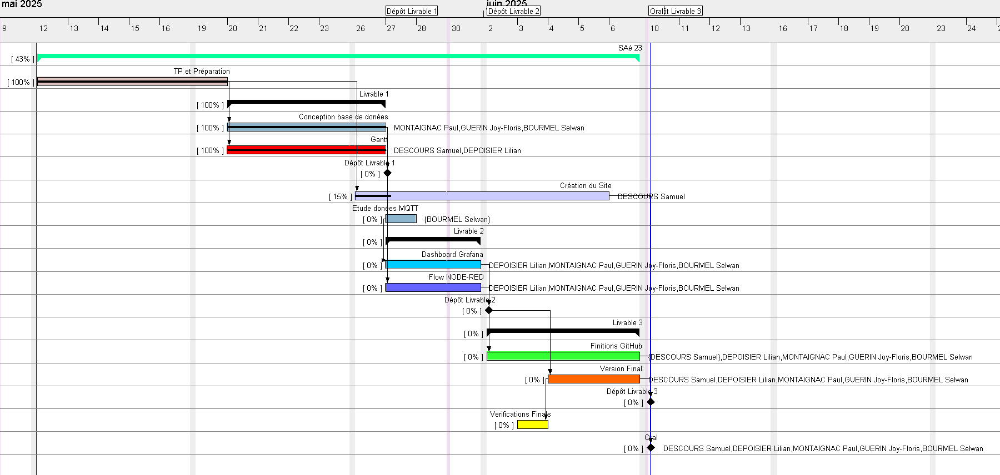

📊 Diagramme de Gantt – Planification du projet SAÉ23

Synthèse de la planification
Le projet SAÉ23 s’est déroulé sur une période de près d’un mois, du 12 mai au 10 juin 2025, et a été structuré en plusieurs phases clés :
- 12/05 → 19/05 – TP et préparation : Mise en place de l’environnement, répartition des rôles.
- 20/05 → 26/05 – Conception : MCD/MPD, Gantt, préparation du Livrable 1.
- 27/05 – Dépôt Livrable 1
- 26/05 → 05/06 – Développement du site : Création des pages, intégration des données.
- 27/05 → 30/05 – Données capteurs : Grafana, Node-RED, Livrable 2.
- 02/06 – Dépôt Livrable 2
- 02/06 → 06/06 – Finalisation : Intégration, version finale, Livrable 3.
- 03/06 – Vérifications finales
- 10/06 – Dépôt Livrable 3 + Oral